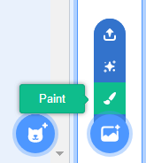
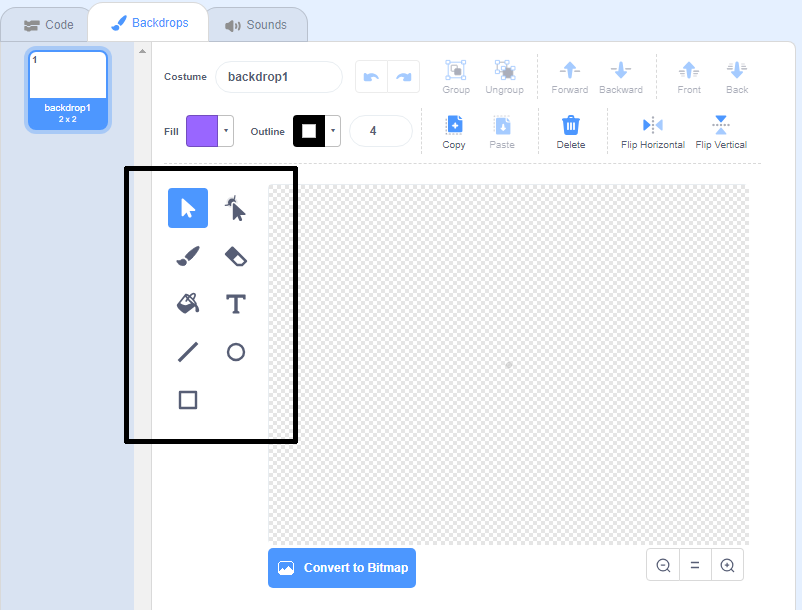

Select the
backdrop
icon in the bottom right and click on "Paint"

Use the drawing tools in the
Backdrops
tab to paint your backdrop.

When you are finished, don’t forget to give your new backdrop a sensible name.